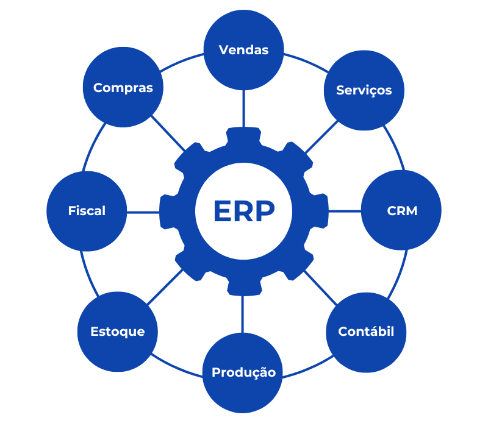

O contato inicial com sistemas de ERP foi no Grupo ONDREPSB. Período de 2008 a 2013, e neste intervalo utilizavam o ERP da Senior Sistemas, uma das maiores desenvolvedoras do país. Módulo Sapiens, que é o de gestão empresarial, onde reúne dados e processos administrativos, financeiros, comerciais, industriais e logísticos. E o módulo Vetorh, para gestão de pessoas, onde realiza as tratativas de administração pessoal (folha), gestão de ponto, recrutamento e seleção, treinamento e pesquisa, e segurança e medicina do trabalho.
A segunda experiência na administração de softwares de ERP, foi no Grupo Hard. Período de 2013 a 2021. Na Hard, uma empresa de indústria e comércio, a experiência foi com a plataforma da Focco, hoje do grupo da Cyncly.
Em ambas as empresas, atuei como Coordenador de TI e obtive muita experiência na administração destas plataformas.